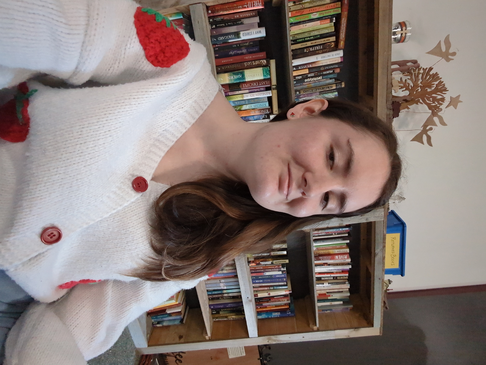
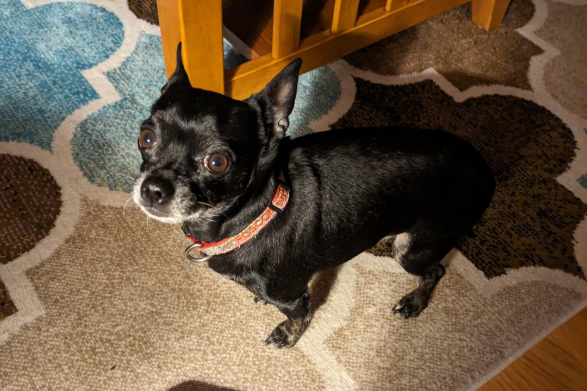
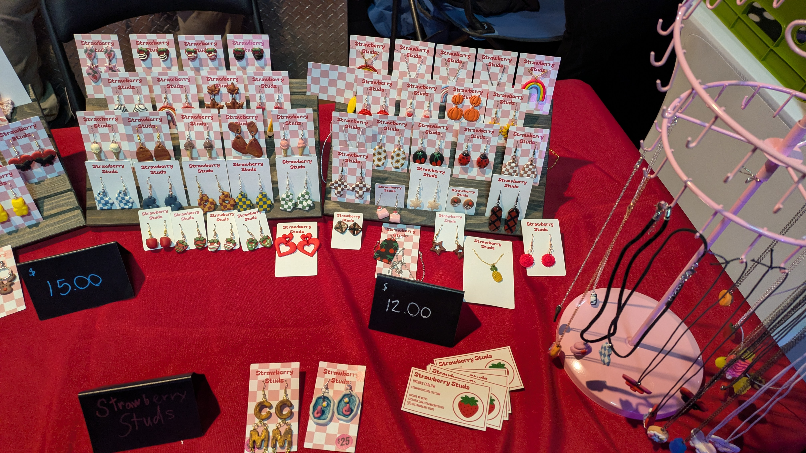

Originally from Oscoda, MI, I graduated from Alpena Community College with an AA in Graphic Design. I am currently attending Central Michigan University to pursue my bachelor's. In my free time, I enjoy playing video games, making clay jewelry, and playing with my chihuahua!

